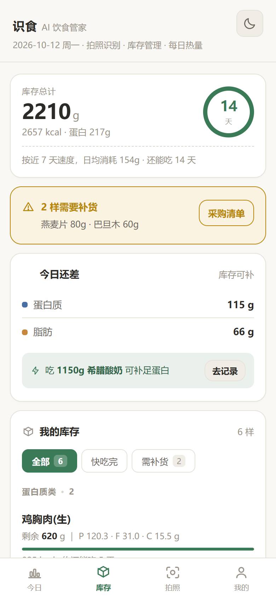
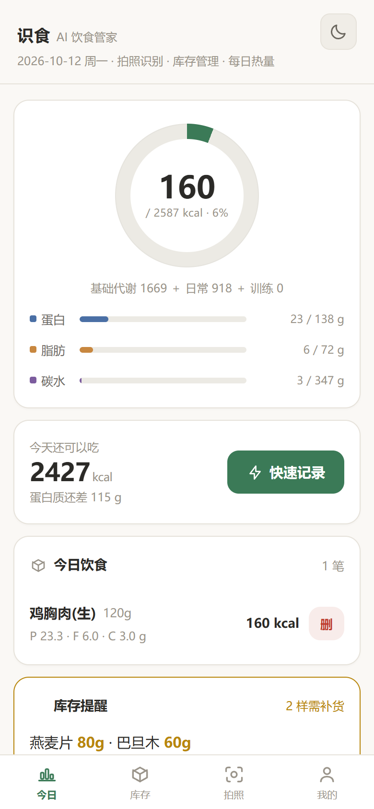
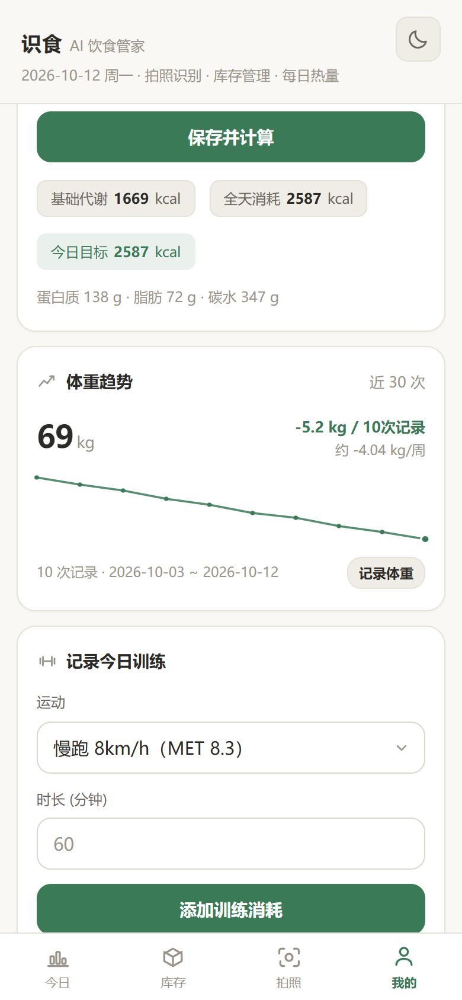
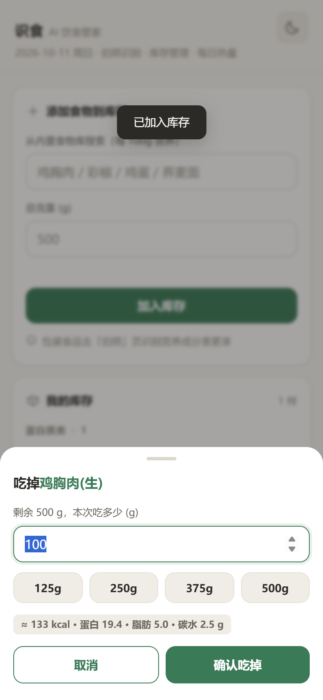
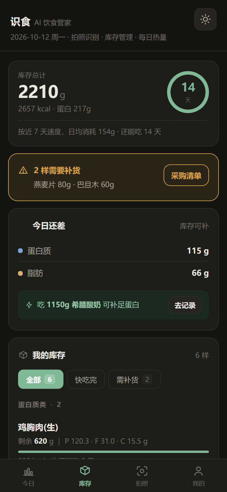
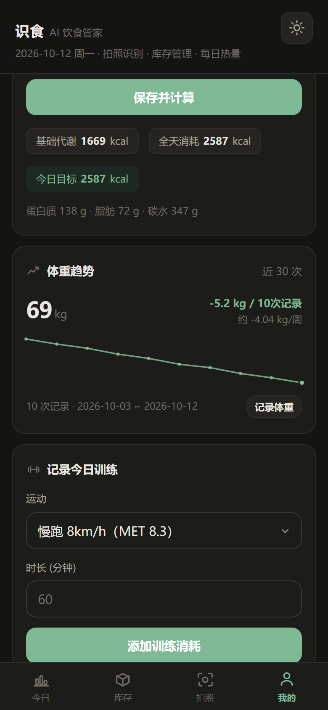

这三个问题里，第 1 个最要命——它意味着你后续做的任何改进，都送不到用户手里。
原版是 cache-first + 硬编码版本号 shishi-v3。用户第一次访问后，浏览器就永远拿缓存，你发了新版他还是看旧的。改为 stale-while-revalidate：秒开 + 后台静默拉新。
90kg 用户选 2.4g/kg = 216g 蛋白 = 792 kcal。若在减脂期（目标 1800 kcal），蛋白质 alone 就占 44%，碳水被挤到几乎没有。已加 35% 上限——这是运动营养学中有文献依据的阈值。
小个子女性选「减脂 −500」会算出低于 BMR 的目标，长期执行有害健康，产品却没有任何拦截。已加 BMR×1.1 下限保护。
🥗📊🥬📷 在 iOS / Android / Windows 上渲染差异极大——有的彩色、有的方框、有的基线错位。已全部替换为 24 个内联 SVG，统一 stroke-width:1.8 线宽。
记录吃掉食物时弹出浏览器的丑陋原生对话框，在 PWA 独立窗口模式下体验尤其割裂。已全部换成自建底部抽屉。
「库存管家」是本品类唯一的差异功能，但原版把 20 样食材平铺成一长条，没有分组、没有余量提醒——用户根本感受不到它和别的 App 有什么不同。已做分类分组 + 低量提醒条。
年龄能填 999、体重能填 0，calc() 直接产出垃圾数字。已加合理区间校验（年龄 10–100、身高 100–250、体重 25–300、单次运动 ≤600 分钟）。
#tab-today 没有 .on 类，而 .tab{display:none}。prompt("吃多少克") 弹原生框抽屉里输入克重时，下方实时显示这一口吃进去多少营养：
≈ 133 kcal · 蛋白 19.4 · 脂肪 5.0 · 碳水 2.5 g
原版没有这个。但用户真正想知道的就是「我吃这 150g 鸡胸肉到底摄入了多少」。它把一次「填数字」变成了「有反馈的决策」——这是让产品从「能用」变成「好用」的地方。
第一轮只是让库存能看，第二轮让它会算。核心判断：纯记录型 App 用户记两天就懒得记了，因为它不还嘴。只有让它主动产出「还够吃几天」「该买什么」「今天差多少蛋白」，用户才有理由每天回来。
「还剩 620g」是没用的信息，「还能吃 6 天」才是有用的。按近 7 天实际消耗算日均，预测每样食材的剩余天数，并汇总出整柜续航。
从「提醒你库存低了」升级到「告诉你要买多少」。按真实消耗速度把低量食材补足到够吃 7 天，一键生成、可复制。
对比目标与已摄入，算出还差多少。然后从你自己的库存里按蛋白密度挑最优解：「吃 1150g 希腊酸奶 可补足蛋白」。这是同类产品都没有的能力——它把「知道差多少」变成了「知道该吃什么」。
鸡蛋剩 25g 该买、巴旦木剩 60g 不用买——一个全局阈值管不了所有食材。每项可设独立提醒线，点开还能看自己的真实消耗曲线。
dailyBurn() 在
有记录的天数少于 2 天时返回 null，界面显示「待记录」而不是一个假数字。第二轮做完后截图发现两个真问题：库存页把「手动添加食物」表单放在最上面，用户每天进来第一眼看到的是一张填表框；而本轮新增的「今日还差」卡被挤到了首屏以下——最难做的功能藏得最深。
<details> 折叠，移到所有汇总卡之后（添加是低频操作，看库存是高频操作）已修正修正前后首屏卡片位置：
修正前 库存总计 @104 … 今日还差 @735（被导航栏 @843 遮住大半）
修正后 库存总计 @104 · 今日还差 @263 · 我的库存 @473 —— 全部在首屏内
库存管家解决了「这个工具能算什么」，但没解决「用户为什么明天还会打开」。要让人回来，得给一个每天看一眼就知道自己状态的东西。
两个克制的设计决定：① 今天还没记不算断——当天还没结束，这时归零会让用户觉得被惩罚；② 空数组不算记录。另外同时显示「本月天数」和「历史最长连续」，只有当前 streak 会让人焦虑（断了就全没了），加上积累型的指标后断了也不归零。
体重每天波动 1–2kg 是正常的（水分、食物残留），所以显示单日变化没有意义。改用最小二乘拟合斜率，输出 kg/周——这是营养学界描述体重变化的标准单位，也天然过滤掉了日间噪声。少于 2 个数据点直接返回 null，不拿单点瞎画趋势线。
path 字符串完全判断不出来。按「上 GitHub 找自己没有的 / 可优化的」要求调研了同类项目，其中三个有参考价值：
brandonp2412/FitBook（174★）7000+ 食物库（源自 CORGIS 数据集）食物库扩充方向LowCarbCheck/openplate（57★）自托管 + 本地优先 + BYOK定位验证garettie/eatlog 体重趋势线（看斜率不看单日）已落地搜索「全麦面包」→ 仅 1 条命中，且该条 energy-kcal_100g 为 null搜索「鸡胸肉」 → 7 条命中，全是包装即食鸡胸肉，无生鲜数据原版是「绿→青渐变 + 高饱和」，属于典型的 AI 生成感设计语言。新版的思路是去掉所有装饰性表达：渐变改中性表面 + 一条 hairline；强调色从亮绿 #16a34a 换成松花绿——中国传统色，饱和度和明度都低，更接近真实植物的颜色，用在数据可视化上不刺眼。
其他细节：圆角从全 999px 胶囊改为 8/12/16/20 四级；数字统一 tabular-nums 等宽（数值不跳动）；阴影几乎看不见（0 1px 2px rgba(43,42,39,.03)），只提供层次。






单文件应用最容易失控的地方是「改了 A 破坏了 B」。所以配了七层零依赖校验、共 227 条断言，全部通过才算改动合格。
关键断言：宏量回算偏差 ≤ 4 kcal · 蛋白质 ≤ 35% 热量 · 脂肪 ≥ 0.5 g/kg · 总热量 ≥ BMR×1.1 · 库存「吃掉→撤销」克重精确还原 · 消耗预测不足 2 天返回 null · 体重趋势不足 2 点返回 null · 浅色对比度 ≥4.5:1、深色 ≥7:1。
display:none。
所以浏览器渲染测试是必跑项，不是可选项。_build/icons.js，重跑组装脚本，重新截图——完全没变。
原来是组装脚本只拼 new.css + new_body.html + new_app.js，
icons.js 是重构残骸，从来没被引用。
grep 一下产物文件里有没有刚写的字符串，两秒就能确认。
两条来自真实使用的反馈，都指向同一个问题：功能做了，但用户够不到。
拆掉 20 项固定 MET 菜单，改成 距离法 / 时长法 / 心率法 三选一。 关键论据：同距离的奔跑消耗与配速基本无关，所以问距离而不是配速 —— 70kg 跑 5km = 363 kcal，且 25 分钟与 40 分钟结果相同。
两套目标：训练日 = TDEE + 实际运动消耗，休息日 = TDEE + 调整。
蛋白质按强度上调，膳食纤维新增为追踪项（IOM 标准 + 训练日 +5g）。
修掉一个 414 kcal 的窟窿：脂肪取 28/30%、碳水补足余量，宏量回算恒等于目标。
识食是 PWA，故意不做安装包。但「添加到主屏幕」这个入口在不同浏览器里
叫法位置全不一样。所以主动捕获 beforeinstallprompt，
首页横幅点一下就弹系统原生安装框；iOS 没有这个 API，降级成图文步骤。
按「公开发布型」准备，不需要私信或逐个联系任何人——发出去让人自己找过来。
完整内容见仓库根目录 PROMOTION.md。发布渠道清单按「不需要主动联系任何人」筛选：Product Hunt / Show HN / r/selfhosted / 小红书 / 即刻 / V2EX 分享创造 / 少数派 Matrix。